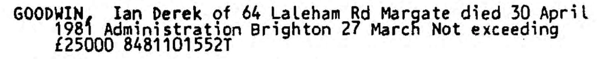

Ian Derek Goodwin 1962 - 1981
[ Home ] | [ Calendar ] | [ Surnames Index ] | [ Family History ]The son of Peter Goodwin and Mavis Cowell, Ian Goodwin, the first cousin once-removed on the mother's side of Nigel Horne, was born in Thanet, Kent, England on Feb 7, 19621,2,3. In 1981, he lived on 64 Laleham Road, Margate, Kent, England.
He died on Apr 30, 1981 in Thanet2,4,5.
Parents
- Peter S
- Mavis E
Citations
- England & Wales births 1837-2006 - Findmypast
- England & Wales deaths 1837-2007 - Findmypast
- England & Wales, Birth Index: 1916-2005 Online publication - Provo, UT, USA: The Generations Network, Inc., 2008.Original data - General Register Office. England and Wales Civil Registration Indexes. London, England: General Register Office. © Crown copyright. Published by permission of the Cont
- England & Wales Government Probate Death Index 1858-2019 - Findmypast
- England & Wales, National Probate Calendar (Index of Wills and Administrations)
Media
Ian Goodwin - Probate

England & Wales births 1837-2006 - BMD/B/1962/1/AZ/000637/006
England & Wales deaths 1837-2007 - BMD/D/1981/3/AZ/000383/095
England & Wales Government Probate Death Index 1858-2019 - GBOR/GOVPROBATE/C/1984-1984/00089383
Family Tree

Generated by Ged2Site. Last updated on Jul 20, 2025